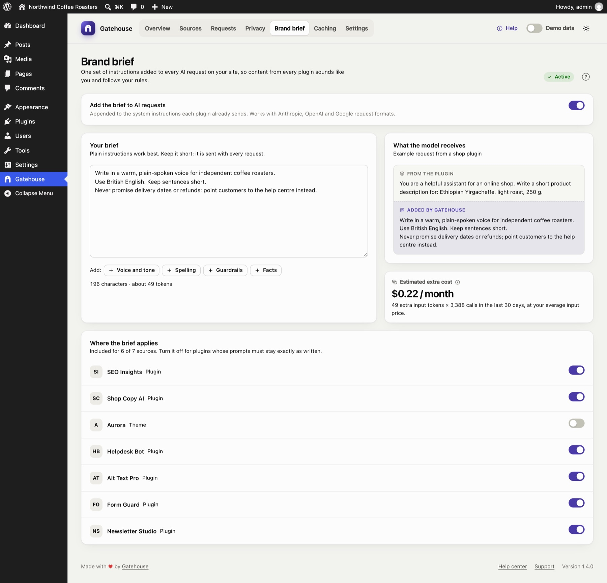

Brand brief
Each AI plugin writes its own instructions for the AI model, so content from different plugins can sound different and follow different rules. The brand brief is one set of instructions that Gatehouse adds to every AI request on your site.

Turning it on#
Switch on Add the brief to AI requests, write your brief and click Save changes. The pill at the top right shows Active when the brief is on and not empty.
Writing a good brief#
Keep it short and plain: it is sent with every request, and you pay for those tokens each time.
Good things to include:
- Voice and tone: "Write in a warm, plain-spoken voice. Prefer short sentences."
- Spelling: "Use British English spelling."
- Guardrails: "Never promise refunds, delivery dates or discounts. Point customers to the help centre instead."
- Facts: "Do not invent product features, prices or statistics."
The + Voice and tone, + Spelling, + Guardrails and + Facts buttons add a starter line for each, which you can edit.
Avoid long background documents, product catalogues or formatting rules meant for one specific plugin.
What the model receives#
The preview shows an example request from a shop plugin. The plugin's own instructions come first, then your brief, labelled Added by Gatehouse.
The brief is added after the plugin's instructions; it never replaces them. Gatehouse places it where each provider expects instructions:
| Provider | Where the brief goes |
|---|---|
| Anthropic | The system prompt |
| OpenAI (Responses API) | instructions |
| OpenAI-compatible chat | A system message |
| Google Gemini | systemInstruction |
Estimated extra cost#
The brief adds tokens to every request. Gatehouse estimates the monthly cost as:
brief tokens × completed calls in the last 30 days × your average input price.
The token count is an estimate of about four characters per token. In the example above, a 196-character brief across about 3,400 calls a month adds roughly $0.22 a month.
Where the brief applies#
The list at the bottom shows every source. Switch the brief off for plugins whose prompts must stay exactly as written, such as translation, code generation or data extraction. This is the same setting as Skip brand brief in a source's policy.
Checking it works#
In the Requests log, the speech-bubble icon in the Gateway column lights up for calls that received the brief. The request details say Brand brief: Added.
Still stuck? Check Troubleshooting and the FAQ, or ask on the support forum. Inside WordPress, click Help at the top right of Gatehouse.